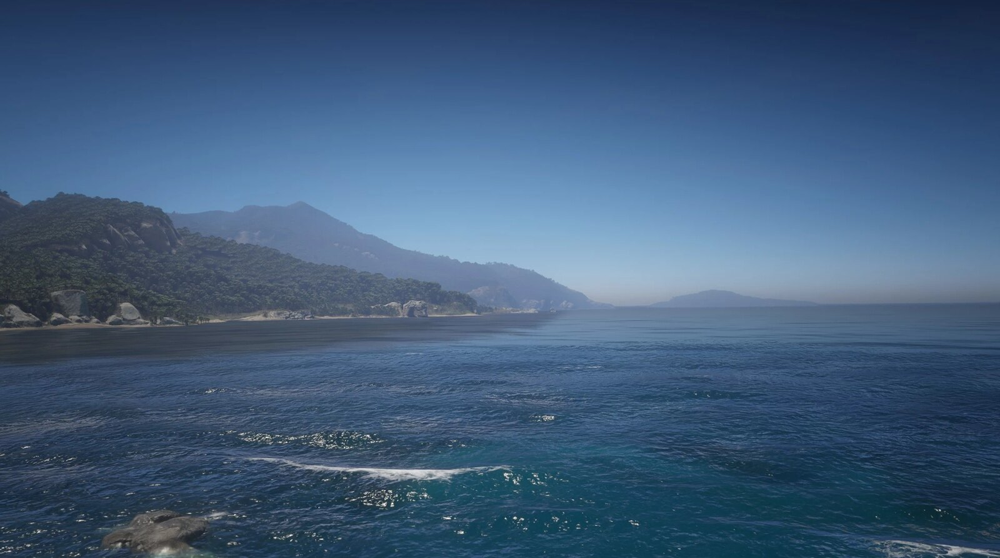
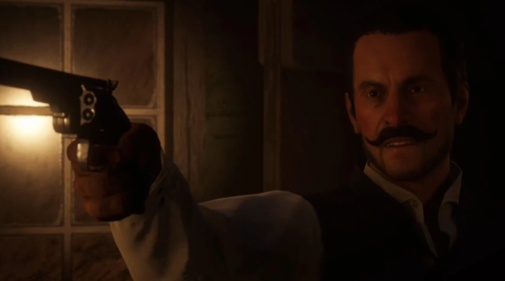
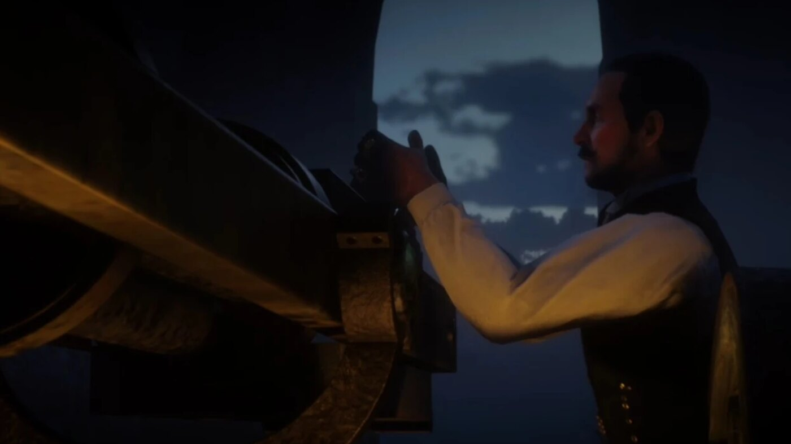

Story guide · Red Dead Redemption 2 Chapter 5: Guarma Red Dead Redemption 2 Chapter 5 of 6 Guarma 1899 By Joseph Lambert · Updated July 8, 2026  Guarma, the tropical island where the gang is shipwrecked in Chapter 5. After the disastrous bank robbery in Chapter 4, the survivors of the Van der Linde gang are shipwrecked on Guarma, a tropical island far from home. Chapter 5 is a short, self-contained detour: stranded and hunted, the gang joins a local rebellion in order to find a way back to America. Full spoilers for Chapter 5 of Red Dead Redemption 2 follow. Setting: shipwrecked on Guarma Fleeing the failed robbery in Saint Denis, Arthur, Dutch, Micah, Bill and Javier stow away on a ship that is caught in a storm and wrecked at sea. They wash up on Guarma, a fictional island in the Caribbean, lush but brutal, ruled by a harsh sugar-plantation regime. Separated at first, the gang slowly regroups.  Alberto Fussar, the colonel who rules Guarma and hunts the stranded gang. The island under Alberto Fussar Guarma is controlled by Alberto Fussar, a cruel colonel who runs the island's sugar operation and crushes its workers. Taken for enemies, the gang is hunted by his soldiers across the island. To survive and get away, they throw in with the local resistance. Joining the rebellion The gang allies with Hercule Fontaine and the island's rebels, who are fighting Fussar's regime. In exchange for help escaping, Arthur and the others take part in the uprising, freeing prisoners, raiding Fussar's men and arming the rebels.  The assault on Fussar's stronghold, the chapter's climax. Escaping the island The chapter builds to an assault on Fussar's stronghold. Under heavy fire, the gang and the rebels overrun the fort and Fussar is killed at his own cannon. With the regime broken, the gang finally secures passage and sails back to the mainland, returning to a country where the Pinkertons are still closing in. Arthur and Dutch Guarma is a turning point for the gang's two central figures. Arthur's health keeps failing, and Dutch, cut off from his usual schemes, makes increasingly cold and violent choices. The trust between them, already strained, weakens further. Key characters Chapter 5 is carried by the five stranded gang members: Arthur (playable), Dutch, Micah, Bill and Javier. It introduces Hercule Fontaine, the rebel who helps them off the island, and the antagonist Alberto Fussar, Guarma's tyrant. Key events of Chapter 5 The gang is shipwrecked on the island of Guarma after the Saint Denis bank robbery. Hunted by the forces of the tyrant Alberto Fussar, the gang goes into hiding. They ally with Hercule Fontaine and the island's rebels. They join the uprising and storm Fussar's stronghold; Fussar is killed. The gang secures a ship and returns to the American mainland, setting up Chapter 6 (Beaver Hollow). PreviousChapter 4: Saint Denis Story guideAll chapters